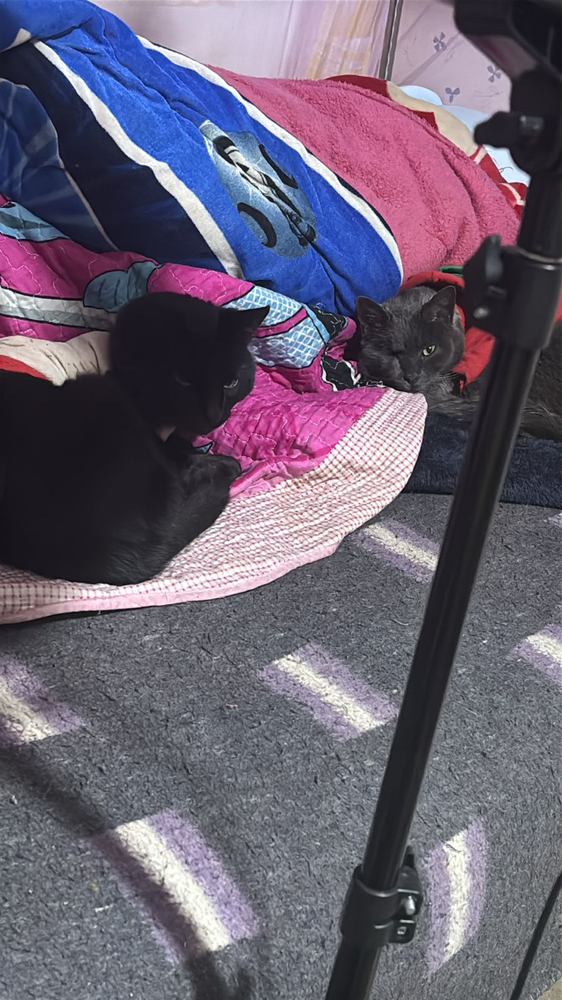
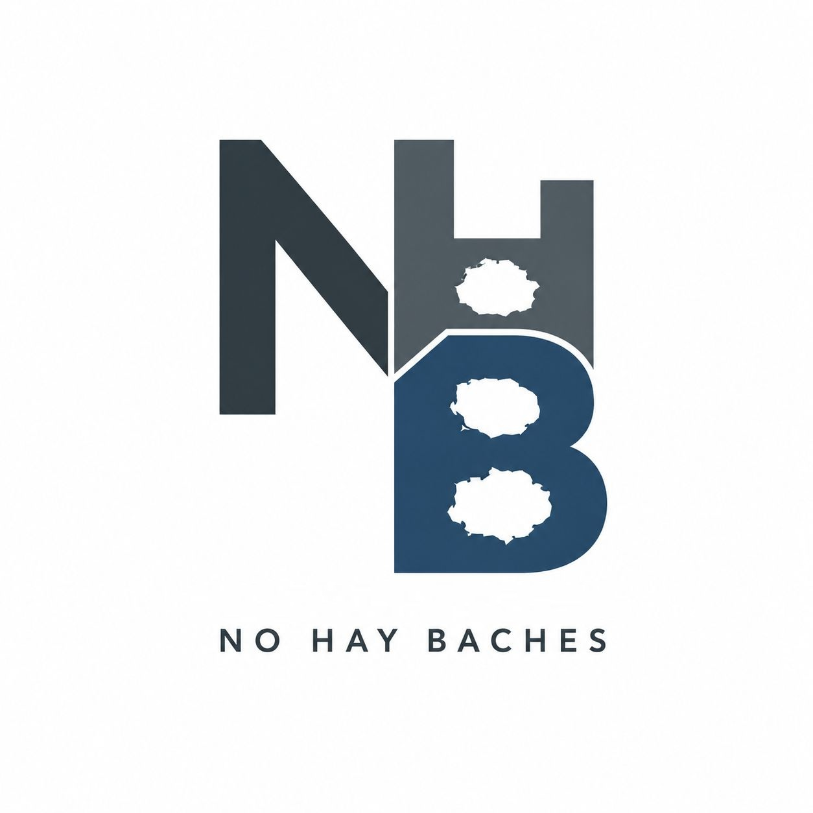
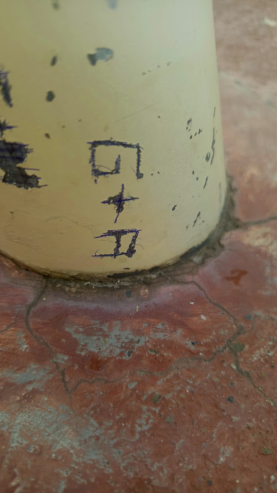
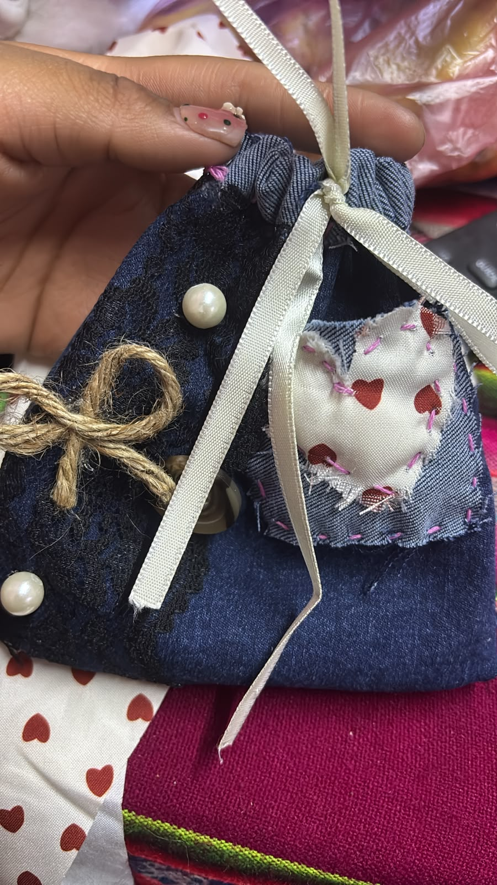
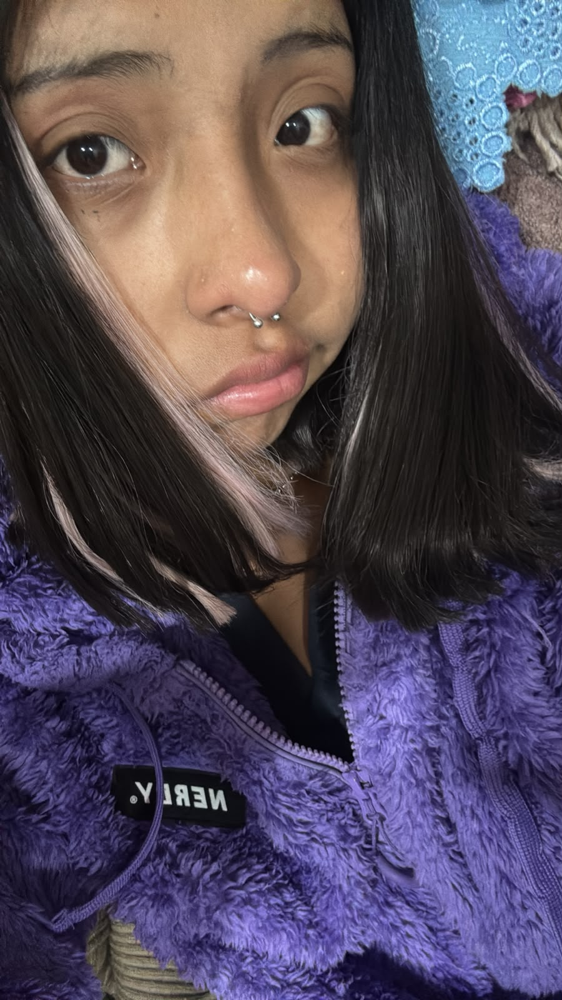
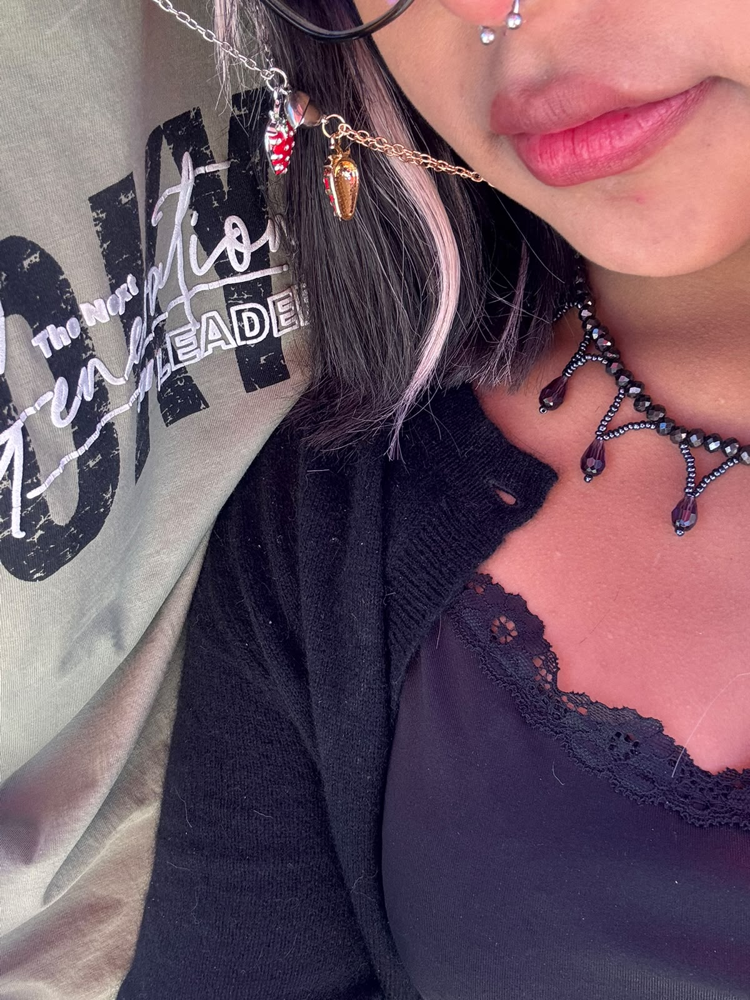
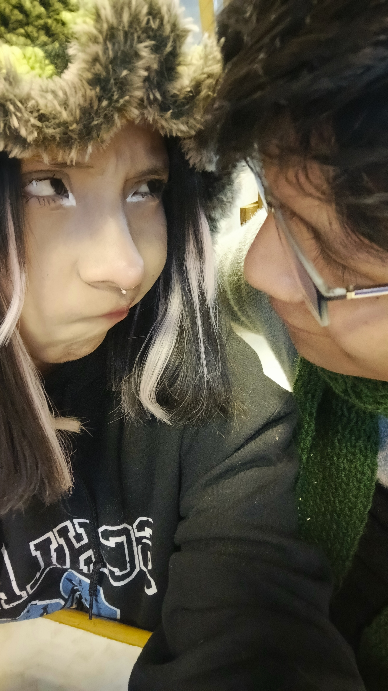
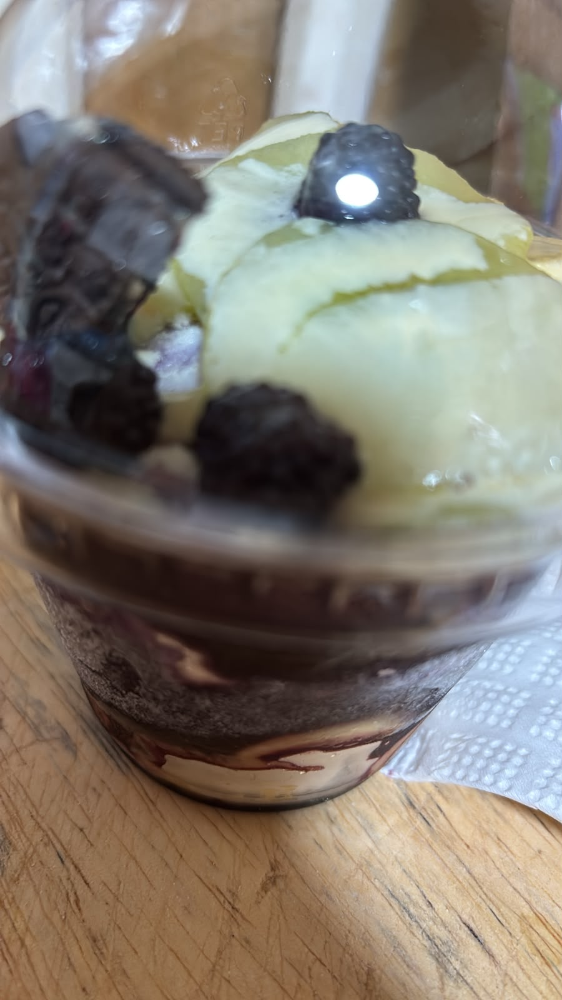
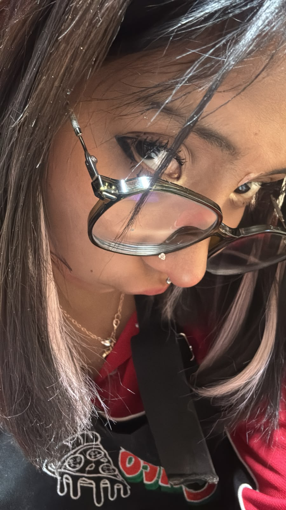
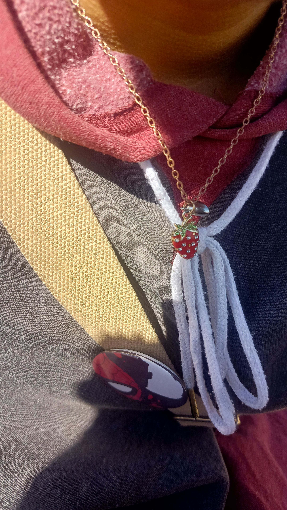

SEPTIEMBRE 2026
Analia, quise guardar este mes de una forma especial para ti.
Cada día puede convertirse en un pequeño recuerdo para volver a mirar.
Aquí puedes escribir lo que vivimos y lo que quieres conservar.
Espero que este calendario te haga sonreír cada vez que lo abras.
Un mes para guardar con cariño.
SEPTIEMBRE 2026
Cada día guarda un espacio para escribir tu propia historia.
Todavía nooo
Este día todavía guarda un pequeño secreto. Tendrás que esperar hasta que llegueeee
Día 1 — Donde todo comenzó
A veces, lo más bonito comienza con una simple conversación.

Ese día comenzamos a hablar y, sin saber todo lo que vendría después, empezó una etapa que terminó significando muchísimo para mí.
Mientras te iba conociendo fui descubriendo muchas cosas de ti, de tu forma de pensar, de lo que te gusta, de lo que te importa y de todas esas pequeñas cosas que hacen que seas tú.
También fue un día que me hizo querer mejorar. Conocerte me hizo mirar muchas cosas de mí de otra manera y aprender a ser una mejor versión de mí mismo.
Y entre todas esas conversaciones nació también la idea de comenzar a guardar nuestros momentos, porque desde ese día sentí que había recuerdos que valía la pena conservar.
Gracias por haber sido el comienzo de tantos recuerdos que hoy guardo con muchísimo cariño. ♡
Día 2 — Quedarme un poco más
Hay momentos sencillos que terminan quedándose para siempre.

Ese día te ayudé con tu trabajo y terminamos quedándonos hasta tarde haciéndolo juntos. El tiempo pasó entre tareas, conversaciones y pequeños momentos que hicieron special aquella noche.
Aunque terminamos cansados, para mí valió completamente la pena. Me gustó poder estar contigo, ayudarte y compartir ese tiempo a tu lado.
Quizás para ti solamente fue una noche haciendo un trabajo, pero para mí fue uno de esos momentos que se vuelven importantes precisamente porque no necesitan ser enormes para sentirse especiales.
Ese día también me hizo darme cuenta de que quiero ser alguien con quien puedas contar cuando necesites ayuda, cuando tengas algo difícil por hacer o simplemente cuando necesites que alguien se quede un poquito más.
Si alguna vez necesitas que me quede un poco más, mientras pueda, voy a estar ahí. ♡
Día 3 — Un juguito y un deseo
Un pequeño momento también puede convertirse en un gran recuerdo.

Ese día nos encontramos y compartimos un momento muy sencillo, pero que para mí fue muy bonito. Tú tomaste tu jugo de naranja y yo mi jugo de sandía, y por un rato simplemente disfrutamos de estar juntos.
Después llegó el momento de despedirte para que pudieras ir a tus clases y presentar tu exposición. Antes de que te fueras te deseé mucha suerte, porque de verdad quería que te fuera increíble.
Me gusta poder acompañarte aunque sea con unas palabras antes de que hagas algo importante. Saber que tienes algo por delante y poder decirte que confío en ti es algo que me nace hacer.
Ese pequeño “suerte” llevaba mucho más cariño del que parecía. Era mi manera de decirte que quería verte cumplir tus cosas y que siempre voy a alegrarme por cada logro tuyo.
Siempre voy a desearte suerte, pero sobre todo, siempre voy a creer en ti. ♡
Día 4 — Los primeros detalles
Desde aquí, los detalles comenzaron a tener otro significado.

Ese día comenzó una parte muy bonita de esta historia. Empecé a preparar detalles para ti y a buscar pequeñas maneras de demostrarte cuánto te valoro.
También nos encontramos y compartimos tiempo juntos. Fuimos a buscar ropa y estuvimos viendo cosas, caminando y disfrutando de ese momento sin necesidad de hacer algo extraordinario.
Me gusta recordar este día porque siento que fue cuando los pequeños regalos comenzaron a convertirse en una forma de guardar nuestros momentos.
Cada detalle que preparaba tenía detrás tiempo, imaginación y muchas ganas de hacerte sonreír.
Desde ese día, cada detalle empezó a llevar un poquito de mi cariño hacia ti. ♡
Día 5 — Un pedacito de nosotros
Los detalles más pequeños pueden guardar sentimientos enormes.

Ese día quise hacer algo especial para ti. Te dibujé en un papelito y detrás escribí una carta, porque quería dejarte algo hecho por mí y que pudieras guardar como recuerdo.
Después fuimos a la feria y compartimos otro de esos momentos que parecen normales mientras ocurren, pero que después se vuelven recuerdos muy bonitos.
Ese mismo día también nació algo muy especial entre nosotros. Tú hiciste una pequeña bolsita para nuestra “farmacia” y yo puse las medicinas. Terminamos creando algo que para mí representaba una idea muy bonita: poder cuidarnos mutuamente.
Me encantó que algo tan sencillo pudiera convertirse en algo tan nuestro. No era solamente una bolsita con cosas dentro. Era un pequeño símbolo de cariño y de querer estar pendientes el uno del otro.
Me encanta que hasta las cosas más sencillas puedan convertirse en recuerdos que siento tan nuestros. ♡
Día 6 — Un lugar para nuestros recuerdos
Algunos recuerdos merecen tener un lugar propio.

Ese día quise hacer algo diferente. Creé una página especialmente para ti, pensada para que pudieras interactuar con ella y encontrar pequeños detalles preparados con cariño.
La idea era que cada parte pudiera guardar algo especial y que poco a poco se fuera convirtiendo en un espacio lleno de recuerdos.
Me gustó poder crear algo desde cero pensando en ti, imaginando qué podrías encontrar, qué podría hacerte sonreír y cómo podía convertir una simple página en algo mucho más personal.
Desde ese momento empezó a crecer todavía más la idea de guardar nuestros días de una manera diferente.
Hice ese pequeño mundo pensando en ti, porque algunos recuerdos merecen quedarse para siempre. ♡
Día 7 — Un día para sonreír
Verte feliz también se convirtió en algo especial para mí.

Ese día me contaste que habías tenido un momento complicado con tu mejor amigo y que justamente era su cumpleaños.
Lo bonito fue saber que pudieron reconciliarse y que pudiste recuperar la tranquilidad con alguien importante para ti.
Me gustó poder conocer también esa parte de tu vida, porque cuando alguien te importa, también importa aquello que hace que esa persona esté feliz y tranquila.
Me quedo con la alegría de saber que ese día terminó de una manera bonita para ti y que pudiste recuperar una amistad que significa mucho.
Me alegra verte feliz y tranquila, porque tu felicidad también es un motivo para sonreír. ♡
Día 8 — Un día para guardar
Hay días que parecen largos porque están llenos de recuerdos.

Ese día fui a estar contigo y pudimos compartir un buen rato juntos. Entre conversaciones y momentos sencillos, el día fue avanzando hasta que también tuvimos que ingeniarnos para continuar con nuestros planes.
Después te acompañé hasta tus clases en la universidad y compartimos otro momento bonito en el camino.
Me regalaste una manzana y recuerdo ese detalle con mucho cariño. Puede parecer algo pequeño, pero cuando viene de ti hasta algo tan sencillo puede convertirse en un recuerdo especial.
Ese día también te entregué el libro que había creado para ti. Me gustaba la idea de que pudieras tener algo hecho especialmente para ti, con páginas que pudieras volver a mirar cuando quisieras.
Antes de terminar el día también dejamos preparadas algunas cosas para el día siguiente, pensando en tomar tecito y hacer salchipapas juntos.
Gracias por convertir un día cualquiera en otro recuerdo que quiero guardar contigo. ♡
Día 9 — Un día lleno de momentos
Un día, muchos recuerdos y una historia que sigue creciendo.

Ese día fuimos a la casa de Viacha y compartimos nuestro tecito mientras preparábamos las cosas para comer. También vimos Ratatouille y disfrutamos de ese momento juntos.
Mientras cocinábamos, cada uno estaba haciendo su parte. Incluso salí a comprar sal mientras tú continuabas preparando las cosas. Son momentos muy sencillos, pero justamente esos son los que más me gusta recordar.
También hicimos nuestro juego de cartas. Ese momento fue importante para mí porque me animé a expresar algo que llevaba dentro y recibí una respuesta que no esperaba. Aun así, me quedo con el valor de haber sido sincero y con todo lo que aprendí de ese momento.
Más tarde me pediste ayuda porque necesitabas algo con urgencia para poder grabar. Fui a llevártelo porque quería ayudarte y estar presente cuando lo necesitabas.
Y al final del día todavía tuvimos nuestro cafecito con pan de limón. También estuviste con tu nuevo piercing de corazón en la nariz, otro pequeño detalle que hizo que ese día tuviera todavía más recuerdos.
Ese día aprendí que querer también significa seguir cuidando, aprendiendo y estando presente. ♡
Día 10 — Un detalle desde lejos
A veces el cariño encuentra la manera de llegar.

Ese día no pudimos encontrarnos, pero eso no hizo que dejara de pensar en ti. Preparé una flor hecha con un bolígrafo, porque quería regalarte algo que hubiera hecho con mis propias manos.
También te escribí varios mensajes bonitos. Quería recordarte lo mucho que te quiero y hacerte saber que, aunque a veces el día no permita vernos, el cariño sigue estando ahí.
Fue un día en el que también quise expresar lo que sentía y cuidar la forma en la que te hacía llegar mis palabras.
Porque no siempre hace falta estar frente a frente para hacerle saber a alguien que ocupa un lugar importante en tu corazón.
Aunque ese día no pudimos vernos, quería que sintieras mi cariño cerquita de ti. ♡
Día 11 — Un detalle para recordar
Hay regalos que guardan mucho más que un simple detalle.

Ese día finalmente pudimos encontrarnos y pude entregarte algunos de los detalles que había preparado para ti.
Entre ellos estaba el collar de las fresitas, ese que tiene una parte para cada uno y que juntos forman un corazón. También te entregué la flor hecha con bolígrafo, otro detalle que preparé pensando en ti.
Después fuimos juntos hasta el teleférico morado. Compartimos ese camino, ese momento y finalmente un abrazo que hizo que todo se sintiera todavía más bonito.
También compartimos nuestro primer panetón del año. Puede parecer una cosa pequeña, pero me gusta pensar que fue uno de esos primeros recuerdos que vamos construyendo juntos.
Ese abrazo, ese collar y ese primer panetón quedaron guardados como otro pedacito bonito de nosotros. ♡
Día 12 — Todo lo que quería regalarte
Quería que este día estuviera lleno de pequeñas razones para sonreír.

Ese día preparé varios detalles para ti. Hice una estrella, preparé un ramo de flores y también hice tulipanes con mis propias manos.
Te llevé todos esos detalles porque quería que recibieras algo que tuviera tiempo, esfuerzo y cariño detrás. No quería que fuera simplemente un regalo, sino una colección de pequeños recuerdos que pudieras conservar.
También preparé una carta y varios papelitos con palabras para ti. Cada uno tenía la intención de hacerte sentir especial y recordarte todo el cariño que te tengo.
Fui hasta cerca de tu casa para poder entregártelo personalmente. Saber que finalmente podía darte todo lo que había preparado hizo que todo el esfuerzo valiera la pena.
Y uno de los momentos que más voy a recordar es cuando vi cuánto significaron para ti las flores y los tulipanes. Ese momento hizo que todos los detalles tuvieran todavía más sentido.
Todo lo que hice ese día llevaba la misma intención: regalarte un poquito de felicidad. ♡
Día 13 — Otro recuerdo contigo
Y así llegamos a otro día que quiero guardar.

Hoy volvimos a encontrarnos y quise llevarte un pequeño detalle: un chupete acompañado de una rosa.
Después compartimos otro momento juntos y tomamos un batido mientras hablábamos y disfrutábamos de estar ahí. También estuvimos viendo vestidos y compartiendo ese tipo de momentos sencillos que terminan haciendo especial un día.
No necesitábamos hacer algo enorme para que el día tuviera valor. Simplemente poder encontrarnos, compartir algo rico, mirar cosas juntos y después despedirnos ya fue suficiente para sumar otro recuerdo bonito a este calendario.
Y ahora que llegamos al día 13, miro todo lo que se ha ido guardando aquí y me doy cuenta de que cada día tiene algo diferente. Una conversación, un regalo, un paseo, una comida, una sonrisa, una despedida o simplemente un momento juntos.
Y todavía quedan muchos espacios por llenar.
Gracias por cada recuerdo hasta hoy. Me encanta seguir escribiendo esta historia, un día a la vez. ♡
Día 14
Una frase para este día.

Escribe aquí el resumen del día.
Escribe aquí tu mensaje especial.
Día 15
Una frase para este día.

Escribe aquí el resumen del día.
Escribe aquí tu mensaje especial.
Día 16
Una frase para este día.

Escribe aquí el resumen del día.
Escribe aquí tu mensaje especial.
Día 17
Una frase para este día.

Escribe aquí el resumen del día.
Escribe aquí tu mensaje especial.
Día 18
Una frase para este día.

Escribe aquí el resumen del día.
Escribe aquí tu mensaje especial.
Día 19
Una frase para este día.

Escribe aquí el resumen del día.
Escribe aquí tu mensaje especial.
Día 20
Una frase para este día.

Escribe aquí el resumen del día.
Escribe aquí tu mensaje especial.
Día 21
Una frase para este día.

Escribe aquí el resumen del día.
Escribe aquí tu mensaje especial.
Día 22
Una frase para este día.

Escribe aquí el resumen del día.
Escribe aquí tu mensaje especial.
Día 23
Una frase para este día.

Escribe aquí el resumen del día.
Escribe aquí tu mensaje especial.
Día 24
Una frase para este día.

Escribe aquí el resumen del día.
Escribe aquí tu mensaje especial.
Día 25
Una frase para este día.

Escribe aquí el resumen del día.
Escribe aquí tu mensaje especial.
Día 26
Una frase para este día.

Escribe aquí el resumen del día.
Escribe aquí tu mensaje especial.
Día 27
Una frase para este día.

Escribe aquí el resumen del día.
Escribe aquí tu mensaje especial.
Día 28
Una frase para este día.

Escribe aquí el resumen del día.
Escribe aquí tu mensaje especial.
Día 29
Una frase para este día.

Escribe aquí el resumen del día.
Escribe aquí tu mensaje especial.
Día 30
Una frase para este día.

Escribe aquí el resumen del día.
Escribe aquí tu mensaje especial.
Una última página para guardar
Mi cielito hermoso todavía quedan muchos recuerdos por escribir
Puedes volver aquí cuando quieras y seguire llenando este mes
Gracias por darle un significado tan bonito a estos días